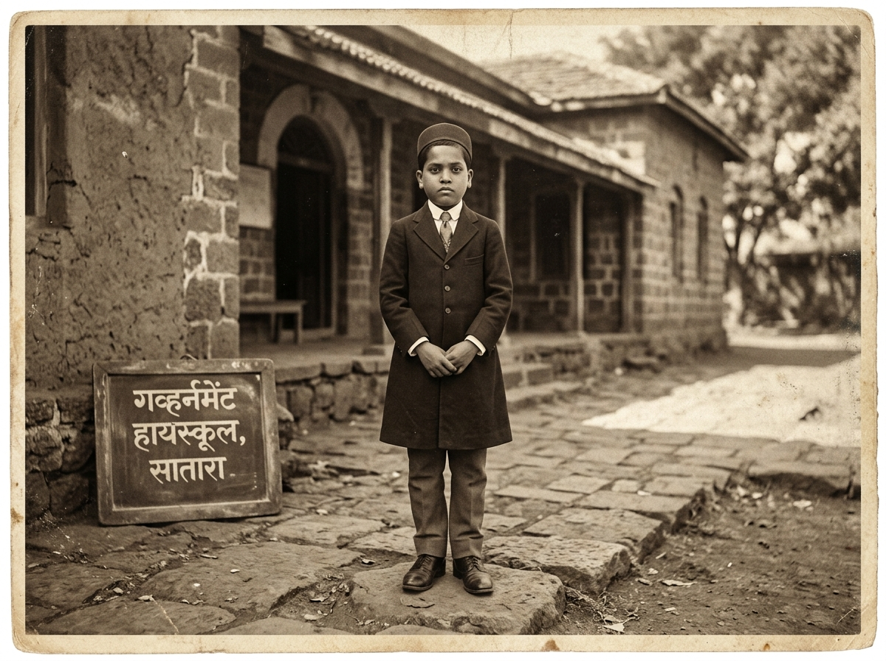

A digital heritage initiative
BODH
Bharat Organised Digital Heritage
01Why BODH
A vast heritage deserves to be within reach.
Cultural knowledge is spread across records, collections and places. BODH brings these threads together, making heritage easier to find, understand and experience.
01Discover
02Understand
03Experience
Archival record 01 / SOURCE

Digital collection
Dr. B. R. Ambedkar
ARCHIVAL PORTRAIT
FROM SOURCE TO EXPERIENCE
Knowledge, connected.
- 01APTBASDigitisation
- 02BODHIntelligent retrieval
- 03SAHAYAK + KIOSKSMuseum experience
Main demonstration
BODH in Action
BODH
Digital heritage demonstration